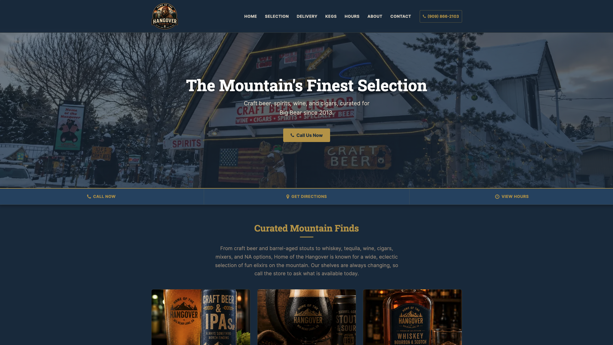
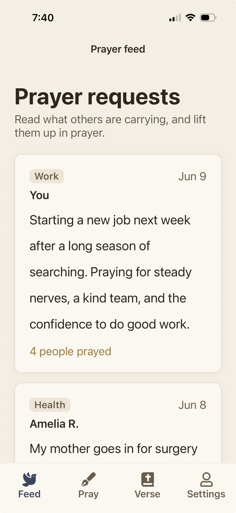
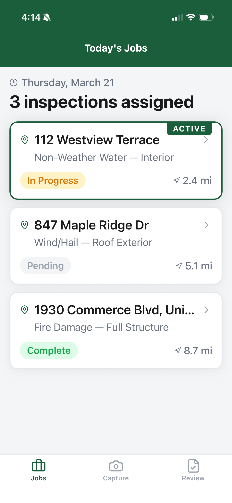
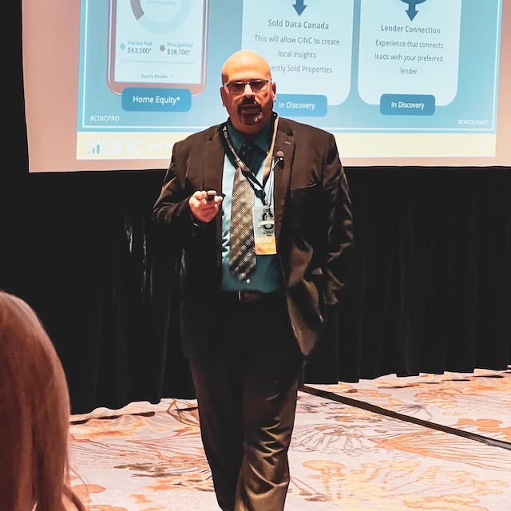

Product Builder · AI Tinkerer · Curious Learner
Building useful products where customer insight, business goals, and AI meet.
I am Heriberto “Eddie” Rodriguez, a senior product leader with 20+ years of experience building mobile apps, real estate technology, healthcare technology, automotive media products, B2B and B2C platforms, SaaS tools, and AI-assisted workflows.

Current focus
AI product workflows that help smaller teams discover, prototype, and decide with more confidence.
Core strengths
20+ Years Product Leadership
0 to 1 Product Development
Mobile Apps
B2B & B2C SaaS
Experimentation
AI Product Development
Featured AI Projects
Practical product work, shaped by modern AI tools and senior judgment.
A first collection of portfolio-ready case studies and prototypes. Each one is designed to show the thinking behind the product, not just the finished surface.

Website rebuild
Home of the Hangover Website Rebuild
Rebuilt a 10-year-old static bottle shop website into a modern, mobile-first site with clearer positioning, refreshed branding, GA4 click tracking, and improved customer actions.
- Tools
- Figma, AI prototyping, analytics
- Outcome
- Sharper story, faster browsing, easier updates

Mobile rebuild
Praying For You Mobile App Rebuild
Rebuilding a 14-year-old JavaScript prayer request prototype into a modern React Native prayer journal app with Firebase planning, Expo Go testing, and an AI-assisted path to iOS and Android beta.
- Tools
- ChatGPT, Codex, Claude Code, Cursor, Firebase, Expo Go
- Outcome
- Cleaner path from intent to action
Operating system
CareerOS: AI-Assisted Product Workflow System
Built a privacy-aware AI workflow system that turns fragmented career activity into structured decision support, reusable workflows, truthful application materials, and human-reviewed outputs.
- Tools
- Claude Code, Claude Cowork, ChatGPT, Codex, Cursor, Perplexity, Google Sheets, Markdown
- Outcome
- More deliberate pipeline management

Mobile prototype
Property Inspection App Prototype
Built a mobile property inspection app prototype for an interview presentation, turning a product concept into a working, reviewable field inspector workflow using AI-assisted development tools.
- Tools
- Rork, Expo Go, Claude Code
- Outcome
- Polished mobile prototype with assigned jobs, capture, review, and submission readiness
Career Impact
Two decades of measurable product outcomes across startups, growth-stage companies, and major brands.
A snapshot of shipped products, growth work, experimentation, and AI-assisted product development across mobile, marketplaces, SaaS, media, healthcare, and real estate technology.
About
Product leadership grounded in curiosity, customer problems, and shipped outcomes.
I did not get into product because I wanted to own a roadmap. I got into product because I have always been curious about how people use technology to solve real problems.
Product gave me a place to connect the things I enjoy most: understanding customers, breaking down messy problems, working with creative and technical teams, and turning ideas into something people can actually use. That is what has kept me in this work for more than 20 years.
My career has moved across mobile apps, real estate technology, healthcare technology, automotive media, marketplaces, B2B and B2C SaaS, ecommerce, and consumer media. The industries have changed, but the motivation has stayed the same: find the friction, understand the opportunity, and help teams ship useful products that move the business.
I’ve built and led products across real estate, media, healthcare, automotive, telecom, and mobile, with experience spanning Redfin, CINC, The Weather Channel, Cox Automotive, BioIQ, AT&T, and National Geographic.
AI has become part of that same curiosity. I do not see it as a shortcut around product judgment. I see it as a way to explore faster, prototype sooner, sharpen thinking, improve QA, and reduce the repetitive work that slows teams down.
Before my product career, I served in the U.S. Marine Corps, an experience that shaped how I think about ownership, discipline, teamwork, and leading through ambiguity.
The projects on this site show how I use AI in the real world: rebuilding a small business website, turning old app ideas into mobile prototypes, creating structured workflow systems, and making product concepts tangible.

Off the Clock
Where the product thinking gets refilled.
Family time
Time with my wife and daughters keeps me grounded and reminds me what all the work is really for.
Long motorcycle rides
Long rides to new places, capturing the journey with my Insta360, and finding space to think away from the desk.
Golfing
Still learning, still chasing consistency, and still enjoying the challenge.
Gaming
Video games, tabletop games, and especially Dungeons & Dragons with friends.
Cooking
Good food, low-and-slow meals, and the patience that comes with getting it right.
AI tinkering
Testing new tools, building small experiments, and learning how AI can make real workflows better.
How I Work
A calm operating model for ambiguous product work.
Strategy
Connect the customer problem, business model, and team capacity. Choose the few bets that deserve real attention.
Discovery
Listen closely, synthesize honestly, and let evidence improve the plan before the roadmap hardens.
Experimentation
Frame crisp hypotheses, run clean tests, and read results with intellectual honesty.
AI prototyping
Use AI to move from idea to artifact quickly, then validate with humans, data, and taste.
Leadership
Earn trust across engineering, design, data, operations, sales, and marketing by making the work clearer.
Decision quality
Pair dashboard fluency with customer empathy so data sharpens judgment instead of replacing it.
Recommendations
What teammates and leaders say about working with Eddie.
Sears McAdam
Product Design @ Redfin
“He is exactly the kind of person you want in the room when facing a complex challenge.”
I worked with Eddie at Redfin, where we teamed up to implement solutions at lightning speed. Eddie is a pleasure to work with; his positive attitude brings momentum to even the toughest daily challenges. His collaborative spirit fosters productive conversations and builds deep trust within the team. He is the type of teammate who leads with intent and conviction while simultaneously creating space for exploration and development. I cannot recommend Eddie highly enough; he is exactly the kind of person you want in the room when facing a complex challenge.
Shawn Craig
Head of Marketing at CINC | People Champion | SaaS Leader
“He backs ideas with solid data and isn’t afraid to dive into new challenges.”
What can I say about Eddie? Well, he's a top-notch product manager who's always pushing for excellence in everything we do. Whether it's refining our product or boosting team morale, Eddie's proactive and hands-on approach makes a real difference. He's not just about ideas; he backs them up with solid data and isn't afraid to dive into new challenges. Beyond his skills, Eddie's genuine care for the team's success makes him standout. Always striving for excellence, Eddie is the kind of teammate everyone needs.
Bruce Parish
Director of Engineering at Commissions Inc.
“He questions everything to ensure the best decisions are made and isn’t afraid to deliver those decisions.”
Eddie is a passionate product owner who will do whatever it takes to make his product the best it can be. He's a team player that fights hard for his team. He prides himself on being a layer of defense between his team and others. He questions everything to ensure the best decisions are made and isn't afraid to deliver those decisions. He's forward looking when it comes to product and is always wanting to make sure the product of today doesn't slow down or prevent the product of tomorrow. He helped develop and cultivate team processes and integrated AI into his internal processes to increase efficiency. Above all, Eddie is a great human being.
JF Thivierge
Strategic Leader | Integrator | Cross-functional Orchestrator | Agile Executor
“A true champion of A/B testing, Eddie is someone you can always rely on to get his hands dirty, support his team, and lead by example.”
Eddie is a seasoned product leader who delivers the best possible consumer experience. He's not afraid to experiment with new ideas, always ensuring that data and analysis back up his decisions. A true champion of A/B testing, Eddie is someone you can always rely on to get his hands dirty, support his team, and lead by example as a servant leader. I feel lucky to have worked closely with Eddie and witnessed firsthand his unwavering passion and dedication to product management.
Nathan Jones
VP of Technology at Commissions Inc. (CINC)
“No one brings more passion and energy to their work than Eddie.”
No one brings more passion and energy to their work than Eddie. He's always eager to talk about the next big idea, or help out with whatever else is going on. Always engaged, always asking great questions.
I worked with Eddie for almost 8 years. I’ll always remember him for how much he genuinely cares about everything he does, from working with his team, to the product he puts out, to the customers who benefit from it. I’ve literally seen him give a man the shirt off his back.
Matt Wolpers
UX Director | Head of UX | Global Design Leadership | Digital Transformation | AI-Driven Design
“I would work with Eddie again in a heartbeat.”
Eddie is one of the most hands on Agile product Managers I have had the please to work with in my application design career. In my time working with Eddie we created two mobile applications from the ground up. We collaborated with customers, sales, engineering and upper management to come up with truly innovative and advanced B2B Car transaction applications. We empowered our users (car dealers) by giving them the ability to be able to trade vehicles with each other through a trusted third party. We had the opportunity to revolutionize the automotive industry and were successful in our efforts. I would work with Eddie again in a heartbeat!
Resume
Resume built for the first scan and the deeper read.
Download the public PDF resume for a concise product leadership overview, or view the web version for a more scannable look at experience, impact, AI workflows, and career history.

Public resume
Choose the concise PDF for sharing or the web version for a more detailed, scannable read.
Contact